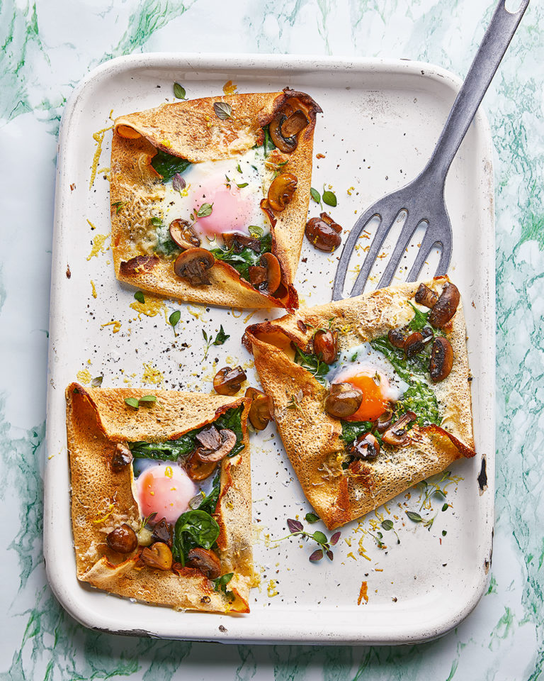

French Food

Description
Lacy buckwheat pancakes are baked with spinach, mushrooms and cheese to make spectacular galettes. A pancake recipe filling enough for dinner.
Ingredients
- 75g buckwheat flour
- 250ml semi-skimmed milk
- 20g unsalted butter, plus extra to grease
- Splash olive oil
- 300g baby mushrooms, halved
- 1 garlic clove crushed
Directions
- Heat the oven to 180ºC fan/gas 6. Put the flour in a bowl and whisk in 1 egg, milk and a pinch of salt. Heat a large non-stick pan over a medium-high heat and lightly grease with butter. Add a ladleful of batter (about ¼ of the mixture), swirling the pan to form a large, thin pancake the diameter of the pan. Cook for 2-3 minutes until the edges of the pancake begin to curl and the underside is golden, then flip and cook for a further 2 minutes. Repeat with the remaining batter, setting the pancakes aside in a pile on a plate.
- In a separate pan, melt the 20g butter with a splash of olive oil. Add the mushrooms and a pinch of salt and cook for 5-6 minutes until tender and golden. Add the garlic and thyme and cook for another minute, then add the spinach and lemon zest and cook until the spinach is wilted.
- Put the pancakes on 2 large baking sheets, then divide most of the cheese among them. Top with the mushroom/spinach mixture, then make a space in the middle of each and crack an egg into it. Fold in the edges of each pancake to partially enclose the filling, leaving a gap around the yolk. Sprinkle over the remaining cheese, then bake for 5-6 minutes until crisp, the egg whites are set and the yolks are done to your liking. Sprinkle with extra thyme and serve straightaway with a green salad.